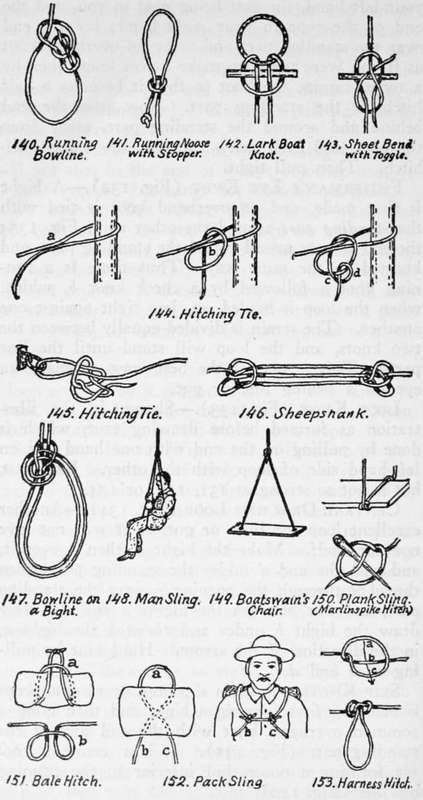

Knots, Hitches, And Lashings. Part 4
Description
This section is from the book "Camping And Woodcraft", by Horace Kephart. Also available from Amazon: Camping and Woodcraft.
Knots, Hitches, And Lashings. Part 4
Slip Knots
A plain slip knot or running knot is made by first forming a bight and then tying a common overhand knot with the end around the standing part (Fig. 135). It is a common knot for forming a noose, but inferior to the running bowline (Fig. 140).
Draw Knot (Fig. 136)
This is tied just like a reef knot, except that after crossing the ends at a the right-hand end is bent back on itself to form a loop (b) ; then pass the left-hand end (c) over the loop, draw it back down under it, and out over at d. Remember the sequence: over, under, over —to reverse it would produce a granny knot.
True Bow Knot (Fig. 137)
This is the same as the preceding save that both ends are doubled back, and the loop e i? drawn down under and out over, in the direction of the arrow. This is the way to fasten your shoe laces securely.
Slippery Hitch (Fig. 138)
This is a very -common temporary fastening in tying up packages, fastening the painter of a boat to the ring of a pier, etc. A pull at the free end casts off the rope at once. Liabh to come undone by accident.
Slippery Clove Hitch (Fig. 139)
A very useful hitch for fishermen and others, as it can be employed on a ring, eye knot, plain rope or line, or a pole or post. A ring is here used for illustration. Pass end of line up through the ring, down over it and behind the standing part of line, up over ring again (to the right) leaving an open loop at a; bend the end into a bight b} pass it back through loop a, and draw taut. It holds against direct strain as firmly as a clove hitch, but is freed instantly by a tug at the free end.
Running Bowline (Fig. 140)
This is merely a bowline with the main rope passed back through the large loop above b in Fig. 131. This forms a slip knot, its superiority to Fig. 135 being that its small loop cannot bind nor jam.
Two ropes may be joined together by making a bowline in the end of one and putting the end of the other through the bight, then forming with it another bowline on its own part—a method often used with heavy ropes or hawsers.
Running Noose With Stopper (Fig. 141)
A simple wav of picketing a horse with a lariat, though the bowline is better. The noose is made c£ right size for the horse's neck, and the overhand knot at the end prevents it from drawing tighter. This loop may also be used at the end 01 a bowstring.
Lark Boat Knot (Fig. 142)
A means of mooring a boat whereby the painter can be cast oft* instantly. A bight of the rope is put through the ring and a stick is thrust through in the manner shown. When the stick is pulled out the painter comes adrift of its own accord.
Sheet Bend With Toggle (Fig. 143)
Two ropes are joined together by a sheet bend (weaver's knot, Fig. 105), but, instead of drawing them taut against each other, a stick (toggle) is inserted for the same purpose as in a lark boat knot.
Hitching Tie (Fig. 144)
Commonly used in hitching a horse. Pass the halter strap or rope around the post from left to right; bring it together and hold in the left hand at a. With right hand throw the end across, in front of the left hand, thus forming the loop b. Now reach with the right hand in through this loop, grasp the part of strap hanging straight down on the far side, and pull enough of it through b to form a bight cd. and slip end through cd. Then draw taut, with the knot turned to the right of the post. If the knot were turned to the left, or drawn directly in front of the post, it would not pull tight and would slide down a smooth post.
Another hitching tie is shown in Fig. 145.
Shortening Ropes
If a rope is too long for its purpose there are many ways of shortening it for the time being without cutting. I show only one, a form of sheepshank (Fig. 146) which has two advantages: first, it can be used even where both ends of the rope are fast; second, it is secure by itself, without seizing (whipping the twine). Make a simple running knot, push a bend of the rope through this loop, and draw the loop tight. The other end of the bend is fastened in a similar manner.
Slings
These are used for a great variety of purposes. They must be absolutely secure, and yet, in many cases, they must be easy to undo.
Bowline On A Bight (Fig. 147)
This is made like the common bowline except that the end is left long enough so that after it has passed out through the bight at b in Fig. 131 it is continued around the big loop and back around and out through b again, so as to double its course. When this is drawn taut you have two loops, instead of one as in the single bowline, and, like it, they cannot slip.
This is the sling for hoisting a man, or lowering him down a shaft, over a cliff, or out of a burning building. For this purpose, make one of the loops longer than the other, for him to sit in, while the shorter loop passes under his armpits and across his back, as in Fig. 148. The man grasps the ropes of the long loop, and is safely supported.
The bowline on a bight is also used in slinging casks or barrels, bales, etc. To untie it, draw the bight of the rope up on the standing parts until it is slack enough, then bring the whole of the other parts of the knot up through it.
Boatswain's Chair (Fig. 149)
A comfortable seat for painters or others working on the side of a building or for similar purposes. The rope goes through auger holes in the board and is se~ cured above by a bowline knot.
Plank Sling (Fig. 150)
Each end of a plank used as a stage is fastened to a rope by making a marlinspike hitch in the rope and running the end of the plank through it in the same way as the marlinspike in the lower figure.
Bale Hitch (Fig. 151)
Bend the middle of the rope over the back of the package as indicated by the dotted lines, bring the ends up over the front of it at a, and out under the bend, using the two long ends to hoist or lower by. A parcel can be carried easily by using a short rope in this way and knotting the ends together for a handle, forming an extemporized shawl-strap. In portaging, the two ends are brought forward over the man's shoulders and held in his hands; the pack can be diopped instantly if he should slip or stumble.
Continue to:
- prev: Knots, Hitches, And Lashings. Part 3
- Table of Contents
- next: Knots, Hitches, And Lashings. Part 5